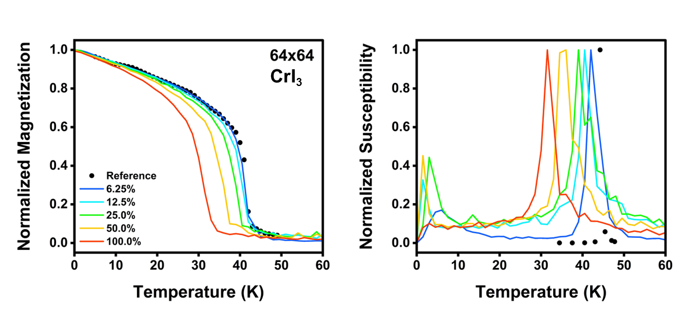
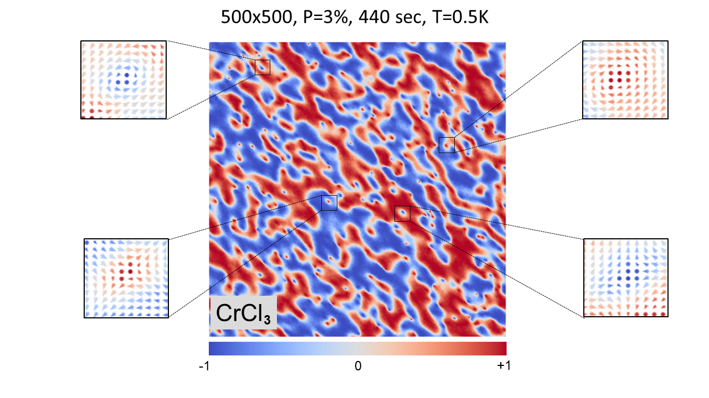
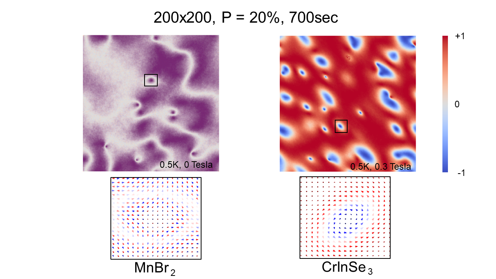

Arkavo Hait · Santanu Mahapatra · IISc Bangalore
CUDA-METRO
GPU-parallel Metropolis Monte Carlo for 2D atomistic spin texture simulation. A pyCUDA engine that updates many spins at once, reaching the ground state of supercells far beyond the reach of sequential single-spin-update schemes.
- JOSS 10.21105/joss.07589
- PyPI cudametro
- License Apache-2.0
- Python ≥ 3.8
The problem
Metropolis Monte Carlo resists parallelisation. The Markov property makes each proposed state depend on the one before it, so the textbook implementation walks the lattice one spin at a time. That is tolerable for the Ising model on a small square grid, and untenable for 2D magnetic materials, which carry finite magnetocrystalline anisotropy, non-trivial crystal structures and long-range interactions whose cost scales as N2 — prohibitive beyond N = 100.
CUDA-METRO updates many spins simultaneously, irrespective of their mutual correlation, and recovers the physics by tuning how much of the lattice is touched per step. The deviation from strict detailed balance is a parameter you control rather than an accident.
- Largest supercell
- 750 × 750
- Ground state in
- 9 h
- On
- A100-SXM4
- Lattice types
- 5
Parallel proposals break detailed balance. Figure 1 below quantifies the error against published reference data: at roughly 10% parallelisation the results are essentially indistinguishable from the sequential result. Choose the ratio for the accuracy the problem needs.
Install
From PyPI:
pip install cudametroOr from source:
git clone https://github.com/arkavo/CUDA-METRO.git
cd CUDA-METRO
pip install ./
A CUDA-capable NVIDIA GPU is required — the kernels are compiled at runtime by
pyCUDA. A fresh Python 3.8+ environment is recommended. Dependencies are
pycuda, numpy, seaborn and
tqdm; pip install -r requirements.pip pulls them in
when working from source.
To confirm the install, run the files under /tests. They execute on the GPU and will fail if the toolchain is not wired up correctly.
Quickstart
A run needs three things: a config file (simulation
parameters), a material file (interaction parameters and
crystal structure), and a script that binds them together.
Samples for each ship in /configs, /inputs and
/src/cudametro.
# a single-temperature run, MnSeTe
import construct
mc = construct.MonteCarlo(config_file, input_folder, output_folder)
mc.load_config()
mc.load_material()
mc.mc_init()
mc.grid_reset()
grid = mc.run_mc_dmi_66612(T) # -> ndarray, N x N x 3
The lattice is a flat array of 3D spin vectors,
[s1x s1y s1z s2x … sNz], saved to the output folder as
.npy. To render it:
python visualize.py <folder_path>
For a Curie-temperature sweep, edit /configs/tc_config.json and run
python tc_sims.py — it plots its own graph. Full parameter reference
is on the Configuration page.
Lattices & kernels
Rather than branching inside the hot loop, CUDA-METRO compiles a
separate kernel per crystal geometry. Kernel names encode the
neighbour counts across the four interaction shells (J1–J4), with a
dm prefix for the Dzyaloshinskii–Moriya setting — so
run_mc_dmi_66612 is the DMI kernel for a 6-6-6-12 coordination.
| Mode | Coordination | Lattice | DMI |
|---|---|---|---|
66612 | 6-6-6-12 | Hexagonal / triangular | Yes |
3636 | 3-6-3-6 | Honeycomb | Yes |
4448 | 4-4-4-8 | Square | Yes |
2424 | 2-4-2-4 | Rectangular | — |
2242 | 2-2-4-2 | Centred rectangular | — |
Every mode is available in tc (critical temperature) form. The three
marked above additionally support dmi mode, which is what produces
skyrmions and merons. For the remaining two, open a running simulation with
tc mode at a single temperature.
Results



Two results go beyond reproduction. For MnSTe the simulation shows skyrmions nucleating and then vanishing as the lattice becomes uniformly ferromagnetic along the applied field — an evolution absent from the original literature, plausibly because the sequential scheme makes it too expensive to reach. For VZr3C3II a giant skyrmion of 21 nm diameter is hosted in a 750×750 supercell at 1% parallelisation using 70% of an A100-SXM4's VRAM: even at that ratio, 8000 lattice points are accessed simultaneously, and the ground state emerges in 9 hours.
Cite
If CUDA-METRO contributes to your work, please cite the JOSS paper:
@article{Hait2025,
title = {CUDA-METRO: Parallel Metropolis Monte Carlo for
2D Atomistic Spin Texture Simulation},
author = {Hait, Arkavo and Mahapatra, Santanu},
journal = {Journal of Open Source Software},
volume = {10},
number = {109},
pages = {7589},
year = {2025},
doi = {10.21105/joss.07589}
}The follow-up analysis of the parallelisation ratio and its effect on ergodic sampling appears in Unbound Parallelization on Heisenberg Model (IEEE HiPCW 2025).